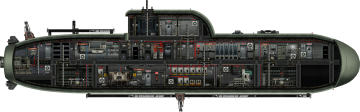
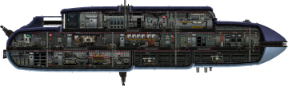
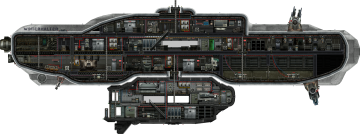
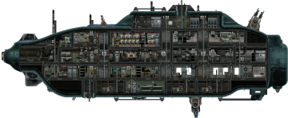
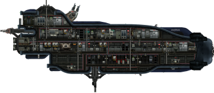
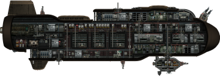
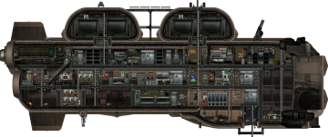
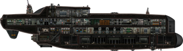
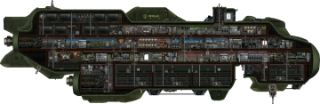

Classes de submarinos
No jogo existem 3 classes de submarinos, os submarinos de exploração, os de assalto e os de transporte
Exploração
Os submarinos de exploração tem uma melhoria no sonar que o permite ver minérios e normalmente tem uma velocidade maior
| Nome | Imagem | Preço |
|---|---|---|
| Dundungo |  | 3.999 Mk |
| Azimute |  | 14.000 Mk |
| Winterhalter |  | 32.000 Mk |
Assalto
Os submarinos de ataque tem uma grande variedade de armas e bastante armadura
| Nome | Imagem | Preço |
|---|---|---|
| Typhon |  | 15.000 Mk |
| Herja |  | 16.500 Mk |
| Kastrull |  | 31.000 Mk |
Transporte
Os submarinos de transporte tem baixa velocidade e grande capacidade de carga e tambem possuem a melhoria no sonar
| Nome | Imagem | Preço |
|---|---|---|
| Camelo |  | 9.900 Mk |
| R-29 |  | 16.500 Mk |
| Berilia |  | 24.000 Mk |